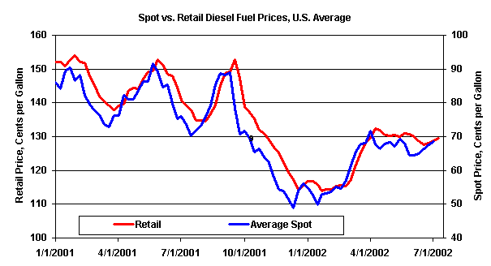
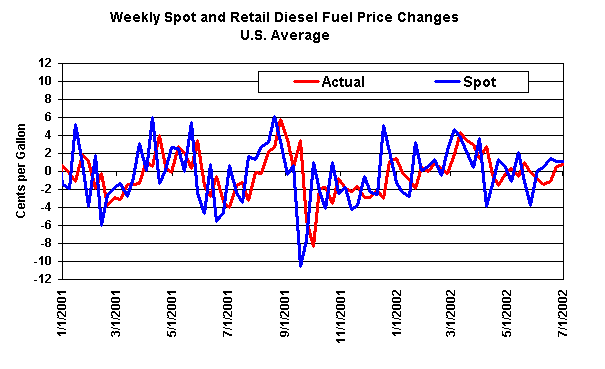
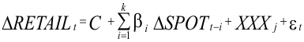
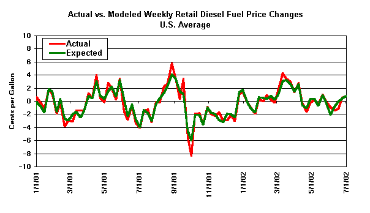

EIA Home > Petroleum > Petroleum Feature Articles
Diesel Fuel Price Pass-through
|
Diesel Fuel Price Pass-through EIA Home > Petroleum > Petroleum Feature Articles Diesel Fuel Price Pass-through |
Printer-Friendly PDF |
Diesel Fuel Price Pass-throughby Michael Burdette and John Zyren*
Over the past several years, the Energy Information Administration (EIA) has extensively studied the relationships between wholesale and retail markets for petroleum products. Beginning with gasoline, we looked at the two ends of the pricing structure in the U.S. market: daily spot prices, which capture sales of large quantities of product between refiners, importers/exporters, and traders; and weekly retail prices, measured at local gasoline outlets nationwide. In the course of this analysis, EIA has found that the relationships between spot and retail prices are consistent and predictable, to the extent that changes in spot prices can be used to forecast subsequent changes in retail prices for the appropriate regions. This article represents the extension of this type of analysis and modeling into the diesel fuel markets. What is price pass-through?In the petroleum industry, like most others, the majority of all products sold changes hands a number of times on its way from the point of production (a refinery) to the point of ultimate consumption. Since each participant in this supply/marketing chain incurs some cost and wishes to make a profit, the price normally increases with each sale. As such, any change in price at the refinery, or any intermediate point of sale downstream, should be expected to affect prices at each successive sale. Petroleum products may be sold at any of the following levels: • Spot market – refers to the one-time sale of a quantity of product "on the spot," in practice typically involving quantities in the thousands of barrels at a convenient transfer point, such as a refinery, port, or pipeline junction. Spot prices are commonly collected and published by a number of price reporting services. • Terminal, or "rack" – sales of product by the truckload (typically about 8,000 gallons) at the loading rack of a product terminal, supplied from a refinery, pipeline, or port. • Dealer tankwagon, or DTW – sales of a truckload or less of product, delivered into storage at a retail outlet. • Retail – sales to the consumer, normally occurring at a service station, convenience store, or other retail outlet. (Larger consumers, such as commercial or government vehicle fleets, may buy directly from wholesalers in larger quantities.) For purposes of this analysis and EIA's previous work with gasoline, we have focused on only spot and retail prices (Figure 1). Daily spot prices for various petroleum products are readily available for a number of large supply points, including the Gulf Coast, New York Harbor, Los Angeles, and others, while retail gasoline and diesel fuel prices are collected and published weekly by EIA. Figure 1 The manner in which prices are passed through the various levels of petroleum markets is not uniform. While successive sellers of a product presumably act to cover their costs and make a profit, sellers vary greatly in their pricing behavior, such as reaction to competitors' price changes, and attempts to protect or increase market share. Additionally, as prices rise and fall, some marketers reportedly reprice product for sale according to the cost of their most recent purchase, while others will anticipate the cost of their next purchase. A further complication is that not all product sold goes through the same levels of resale. Some product is sold directly by the refiner at its own company-operated retail outlets, while other fuels go through a succession of resales by any combination of traders, jobbers, lessee dealers, or independent marketers. (This is particularly true of gasoline; the market structure for diesel fuel tends to be simpler and more uniform.) In any case, regardless of the differences in individual sales, the aggregate result of this combination of wholesale and retail activity is a recognizable pattern of price pass-through. As can be seen in Figure 2, significant changes in spot prices tend to show up in retail prices with some time delay, and may be somewhat less pronounced. EIA theorized that this phenomenon could be explained by a distributed lag: that the impact of a spot price change seen in a given week might be spread over several following weeks at the retail level. We then set about analyzing this lag by looking at the week-to-week price changes at spot and retail levels for specific regions. Figure 2 This work was first applied to gasoline (see Assessment of Summer 1997 Motor Gasoline Price Increase, (DOE/EIA-0621, May 1998)). Using lessons learned from that experience, EIA has now focused the same type of analysis on diesel fuel (specifically, low-sulfur on-highway diesel fuel). Although not widely used for automobiles in the United States, diesel fuel is used by most large trucks and buses, with U.S. sales totaling over 100 million gallons per day (compared to over 350 million gallons per day of gasoline). Retail sales of on-highway diesel fuel occur primarily at truckstops, commonly located near major highways. EIA's weekly retail prices are used by many trucking companies and independent owner-operators in fuel escalation clauses involved in setting freight rates. As such, the diesel fuel price pass-through analysis presented here will be helpful both to EIA in validating the results of our weekly retail price survey, and to industry and government analysts wishing to forecast the movement of retail diesel fuel prices over the near-term. Additionally, improved understanding of petroleum product pricing phenomena can aid policymakers and the public in evaluating market performance, and particularly the often-controversial question of whether any unusual manipulation of markets occurs. Analytical ApproachIn order to analyze the relationship between spot and retail diesel fuel prices, EIA first endeavored to match up appropriate spot price data to each regional average retail price produced by the EIA-888 "On-Highway Diesel Fuel Price Survey." The ten retail prices used included all five PAD Districts, the three PADD 1 sub-districts, California, and the U.S. average. For each geographic area, we looked at the supply patterns, including refineries, ports, and pipelines, and determined the primary supply sources for the region. This information was then matched with available spot price data, and where necessary, a weighted average spot price was created according to the portion of the region served by each spot market. The spot prices used for this paper are listed in Table 1 and were obtained from DRI/Platt's, Inc. Table 2 demonstrates how the spot prices for each region (U.S., PADD, and sub-PADD) were generated. Weekly averages of the spot prices were calculated from the daily values. Derivation of the spot market weighting factors depends on the particular region. The weighting factors for California (SPOTCA), Nevada (SPOTNV), and Pacific Northwest (SPOTPNW) were based on the population of the regions served by the relevant spot market, whereas the factors for national U.S., PADDs, and sub-PADDs were based on sales volumes reported on Form EIA-782C, "Monthly Report of Prime Supplier Sales of Petroleum Products Sold for Local Consumption."
Investigation of the time series properties of the price data was performed in order to assist in specifying the form of the forecasting model; for example, data with unit root properties are best analyzed in first differences, whereas stationary series can be estimated in level form. The unit root test could not reject the hypothesis that the retail and spot diesel fuel price series have a unit root; thus first differences of all data series were used for the regression analysis. Detailed tests for co-integration were not performed because it was empirically determined that the forecasting ability of the model degraded whenever a statistically significant error correction term was included. The retail prices and weekly averages of the spot prices were defined to correspond to the same week; since the retail data correspond to a Monday morning open of business price, the retail prices were estimated only as a function of lagged spot prices from previous weeks. The price response models were estimated in the form: Equation C1.  Where: D is the week-to-week change RETAILt is the Monday diesel retail price for week t SPOTt is the average diesel spot price for week t XXXj for j = 1 to 3; are dummy variables (see Table E2) et is the random error term at time t.
Table 3 and Table 4 show the parameter estimates for the various regions using Ordinary Least Squares as the estimation method. The lag length was chosen by using the number of lags that minimized the Akaike and/or Schwartz-Bayes information criterion value; this also provided parameter estimates that showed little or no increase when an additional lag was added to the estimation. ResultsEstimates showed that the price pass-through from spot to retail markets is complete by two months, with about 70 percent of the change occurring within 2 weeks and 90 percent within 4 weeks. However, PAD District 4 displayed much slower changes, with only about 50 percent spot price pass-through occurring within the first two weeks. A priori, one would expect to see approximately 1:1 eventual pass-through of spot price changes and would also expect the influence of a spot price change to decrease monotonically over time after the first time period. Close examination of the estimation results show that, except for one or two isolated instances, the regression models for the various regions do display this expected behavior. The results show, depending on the region, that anywhere between 85 and 107 percent of the spot price change is passed through to retail within 2 months and also that lag effects decrease over time.
The cumulative price pass-through results are shown in Table 5. This table shows the expected increase in retail price over time resulting from a sudden 10 cent-per-gallon increase in the spot price. Using PADD 3 as an example, if the (USGC) spot price increased by 10 cents per gallon during a particular week, it would result in the retail price increasing by 7.2 cents per gallon within two weeks, 9.0 cents per gallon within 4 weeks and 9.6 cents per gallon within 6 weeks. Note that most of the retail price change occurs within the first two weeks, and that most subsequent weekly changes are smaller. In all regions, an initial 10-cent spot price change will have at least 5 cents passed through to retail within 2 weeks and at least 8 cents after 4 weeks. The reason for a complete pass-through within 3 weeks for sub-PADDs 1x and 1y probably lies in the small area of these regions, and because the major sources of supply are relatively close to the main population centers. Once the appropriate lags were determined, using the regression procedure described above, a spreadsheet model was created using these lags and available spot price data to forecast retail price changes by week. Data were available to model most of the regional prices as far back as 1995. The results of this model, for the U.S. average retail diesel fuel price, are shown in Figure 3. (For clarity, only the period from January 2001 to date is shown. The complete series for the U.S. average, as well as each region modeled, are shown in Figures 4-13.) The effectiveness of this model was then measured in two ways: the percentage of weeks in which the model correctly forecast the direction of the price change, and the mean absolute error of the forecast weekly retail price change from that actually experienced. These results are shown in Table 6. As can be seen in Figure 3 and Table 6, the model provides a relatively accurate forecast of retail price changes one week ahead. For nearly 90 percent of the forecast weeks at the national level (disregarding changes rounded to zero), the model correctly predicts the direction of the retail price change. The mean absolute error of the retail price change forecast is 0.5 cent per gallon, out of an actual mean weekly change of 1.2 cents. Figure 3
Aside from the accuracy of the model, what do these results indicate about retail diesel fuel pricing? Perhaps one of the most revealing aspects of this analysis is what the results do not show: there is so little difference between actual retail diesel fuel prices and the forecast created from spot prices and observed lag patterns that there is no evidence of significant influence on aggregate retail prices beyond the spot price level. In other words, despite allegations of competitive irregularities in retail markets, it appears that virtually all of the movement in retail prices (on a national and regional basis) is predetermined by previous movements in spot prices. It should be noted that there is also no appearance of asymmetry (different pass-through behavior when prices are rising than when they are falling) in these results, though no formal testing for asymmetry was performed. It is also useful to note some apparent differences between price pass-through for diesel fuel and that for gasoline. Though definitive results will not be seen until gasoline and diesel fuel pass-through analyses are performed with identical techniques and for the same time periods, it appears from comparing the results of the present study with previous work on gasoline that the results for diesel fuel are somewhat more consistent, producing a more accurate model. If this is in fact the case, a reasonable explanation could be the fact that the U.S. market structure for on-highway diesel fuel is simpler than that for gasoline, with essentially only one grade or formulation of fuel sold. Additionally, the average speed of pass-through is significantly more rapid for diesel fuel, possibly reflecting fewer middlemen, on average, transacting for each gallon of diesel fuel as opposed to gasoline. It should be noted, however, that even absent an updated gasoline study, the earlier work similarly left little room for market manipulation at the retail level, as almost all of the retail variation seen appeared to be explained by lagged spot price movements.
Further WorkAlthough the results of EIA's price pass-through modeling efforts to date are useful, there remains a significant amount of further work that could be done in this area. Enhancement and recalibration of our existing retail gasoline price model, using some of the further refinements derived from the analysis of diesel fuel prices described in this report, are underway and scheduled for completion later in 2002. Potential additional efforts on this subject include: • Attempt to drive the model with daily spot prices. The current model uses weekly average spot prices; this could lead to inferior results when there is a significant price shift during the week, masked by the weekly average. • Evaluate significance of 100-percent pass-through of spot price changes. The regressions performed in this analysis yielded total pass-throughs for the various regions totaling from 85 to 107 percent. Intuitively, it seems that the total pass-through should normally reach 100 percent, and no higher, within several weeks. Any significant deviation from 100 percent pass-through could be the result of some sort of statistical "noise", which could possibly be eliminated. • Adjust model for one-time changes, such as changes in tax rates, during the period covered. • Calculate pass-through including intermediate price levels (rack and dealer tankwagon). • Analyze price pass-through for additional products, including heating oil and propane. EIA may pursue any or all of these suggestions in future analysis according to customer interest and available resources.
* Also contributing to this article was Robert Hubbard III. | ||||||||||||||||||||||||||||||||||||||||||||||||||||||||||||||||||||||||||||||||||||||||||||||||||||||||||||||||||||||||||||||||||||||||||||||||||||||||||||||||||||||||||||||||||||||||||||||||||||||||||||||||||||||
|
Need Help? phone: 202-586-8800 email: infoctr@eia.doe.gov Specialized Services from NEIC |
|
For Technical Problems phone: 202-586-8959 email:wmaster@eia.doe.gov |
|
Energy Information Administration, EI 30 1000 Independence Avenue, SW Washington, DC 20585 |
| Home | Petroleum | Gasoline | Diesel | Propane | Natural Gas | Electricity | Coal | Nuclear |
| Renewables | Alternative Fuels | Prices | States | International | Country Analysis Briefs |
| Environment | Analyses | Forecasts | Processes | Sectors |